{kind=link}
{kind=link}
{kind=link}
{kind=link}
{kind=link}
{kind=link}
{kind=link}
{kind=link}
{kind=link}
{kind=link}
{kind=link}
{kind=link}


Nichimo 1/48 Kawasaki Ki-45 Nick (Dragon Slayer)
Allied Code Name "Nick"
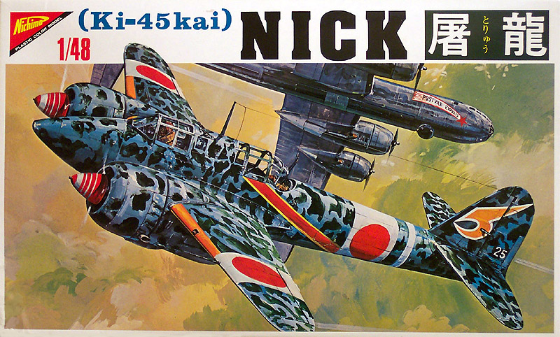
Kit #4819 Collector’s Market Value approximately $22.51
Images and text Copyright © 2004 by Matt Swan
Developmental Background
The Japanese Army needed a long-range fighter to cover great distances during any large-scale conflict in the Pacific and army planners felt that a twin-engine design could meet this need. In March 1937, the Japanese Army Staff sent a rather vague specification for such an airplane to a number of manufacturers. The specification described a two-seat fighter with a speed of 336 mph, an operating altitude of 6,560-16,405 ft, and endurance of over 5 hours. Takeo Doi, Kawasaki chief project engineer, began work on this design in January 1938 but the first production aircraft did not fly combat until the fall of 1942 giving this aircraft the longest gestation period of any developed to date.
The Bristol Mercury engine, built under license, was chosen to power the new aircraft but due to poor performance issues Kawasaki substituted 14-cylinder Nakajima engines, rated at 1000 horsepower each. Engineer Doi also revised the engine nacelles and prop spinners resulting in an increased top speed of 323 mph. Kawasaki narrowed the fuselage, increased the wingspan and area, revised the nacelles again, and modified the armament package until at last performance met army standards and the Toryu was ordered into production.
Unlike many Japanese Navy fighter airplanes, the Ki-45 aircraft had crew armor and fire-resistant fuel tanks. These airplanes also carried a heavy gun battery that usually consisted of 20mm and 37mm cannons. Kawasaki Ki-45-Kai-Hei Toryu (The Dragon Slayer) was the night fighter version sporting a 37mm cannon in the lower fuselage. This was field-modified with oblique firing 50 caliber machineguns replacing the upper fuselage fuel tank. The nose was left empty because there were plans to install a centimetric radar and antenna there. None were ever fitted with this equipment and it is estimated that 477 units like this were built. All Ki-45s also were provisioned for two drop-tanks or two 551-pound bombs on the under wing racks.
The Ki-45 earned a gruesome place in history in May of 1944 when it was employed for the first suicide attack in New Guinea, months before the first kamikaze attack. On the 27th of that month four Kai-B's made a suicide attack on the north coast of New Guinea, using their speed and maneuverability to press home the attack. Designed as a long-range escort, the Dragon-Slayer was fated to never perform this role. The Ki-45 soon became popular with flight crews who used it primarily for attacking ground targets and ships including U. S. Navy Patrol Torpedo boats but truly came into its own defending against the increasing American bomber attacks operating without fighter escort in Southeast Asia. When the Boeing B-29 Super Fortress began raiding the Japanese home islands, the heavily armed Kawasaki Dragon Slayer was one of the more effective defenders against the huge bombers.
A total of 1,698 Ki-45s were built. The NASM Ki-45 Kai Hai (Mod. C) is the last known survivor of the only aircraft used by the Japanese as a night fighter during the Second World War.
The Kit
The Nichimo Kawasaki Ki-45-Kai-Hei, while more than 25 years old, is an excellent kit that compares favorably with some of the latest kits offered by Hasegawa, Tamiya, or Monogram. The detailed cockpit and crew compartment contain an instrument panel, radio equipment, levers, seats, bulkheads, black boxes, and a pair of obliquely firing Ho-5 cannons, control stick, gun sight, and a swivel mounting for the rear defensive machine gun. The kit displays nicely engraved panel lines and rivet detail throughout.
The primary sprues of parts are contained in two large poly bags. Unfortunately the clear parts are packaged in the same bag as the main fuselage piece. Mine were broken off the tree but did not appear to have sustained any damage. There was a small amount of flash on some of the parts and there is a really nasty sinkhole in the pilot’s chest. Two of the engine intakes have minor sink holes in them as well. There are no alignment studs on the fuselage but all other large pieces do have these studs. Once the cockpit floor pan is installed it does a nice job of establishing alignment for the fuselage halves. One item that was noticeable was the finely feathered trailing edges on the wings, elevators and rudder – much better than on most kits produced today. The three sprues of light gray injection molded pieces total out at 91 parts, add to that the four clear parts we have 95 total pieces in the box.
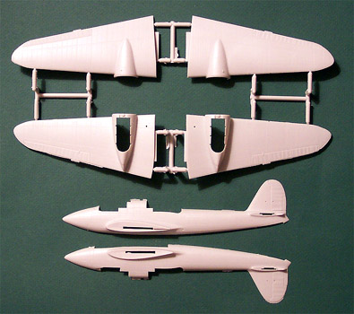
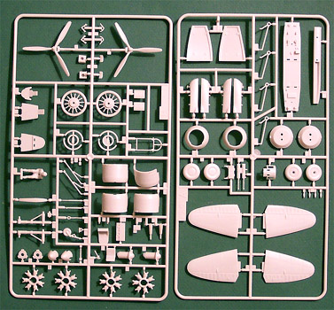
You may click on the above images to view larger pictures
Decals and Instructions
The instructions for this kit are a medium sized fold-out with eight panels. I have heard that some modelers received English instructions but out of all of the Nichimo kits in my stash, I have yet to acquire one with these instructions. All of mine are in Japanese and guess what, I don’t read Japanese. On the plus side there are about twelve very nice exploded views with sequential construction diagrams that are pretty easy to follow. A little study is required and some outside reference material is needed for color-coding but nothing here that cannot be overcome.
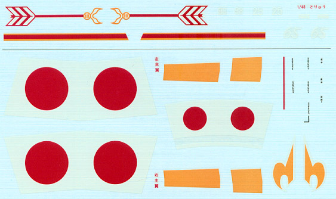
I think the decals are the single thing that concerns me the most in this kit. These markings are very thin, so thin that any underlying camouflage patterns will be visible. Depending on the quality of your monitor you may be able to see fine lines running though the decal sheet from left to right. That is a characteristic of the paper but I can see the paper color variations right through the decal. This means that either I paint a white background for each decal first or simply discard these decals and try to find an adequate aftermarket product. As you can see the yellow wing leading edge markings are provided as decals, something I think I would rather paint. There are a few stencils and overall markings are for one aircraft only. The instructions include a single panel devoted to decal placement and it appears to be fairly straightforward.
Conclusions
To the best of my knowledge this is the only 1/48 scale kit of this unusual aircraft. Surprisingly, even after 25 years of non-production there are a few aftermarket items available for this kit. Cutting Edge has a wheel mask set and a canopy mask set, Eduard offers a mask set as well and Falcon Industries has a replacement canopy for it. Engines and Things still list a resin engine package for the kit and True details has replacement resin wheels but in all honesty none of these packages are really needed for it. The canopy is simple enough to mask with tape, the engine detail provided with the kit is more than adequate, especially with such and enclosed cowling and the wheels on a Nick were smooth tread – how difficult is that to replicate? All in all this is a very nice kit and I highly recommend it. Any connoisseur of the pacific theater conflict should have one of these in their collection.
Construction
Well, I just could not resist the temptation to start this kit. As it was I only had two other builds going and this one just looked so good…. So here we go.
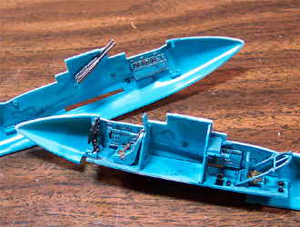
Construction begins with the fuselage interior by assembling the basic pieces of the floor pan and adding the side panels to the interior walls. These subassemblies are airbrushed with Mitsubishi cockpit blue then the details are picked out with Testors enamels, dry brushed with steel and washed with a basic sludge wash. The color choice may not be accurate but I could not find any material that covered the interior of the aircraft. The kit has no seatbelt details so I corrupted a set of Eduard USAF seatbelts for the pilot and some lap belts for the gunner position. The dash has no instrument details other than basic dial outlines. I used Reheat decals here to dress it up a little. A couple more of these decals were used on the sidewall panels as well. The oblique firing 50 caliber machine guns had the barrels drilled out before installation. Two notes on that picture, first I seem to be getting a little color shift in my software so it’s not really as bright as it appears and secondly that picture is linked to a larger image so you can click on it for a better view.
Once the floor pan and interior pieces were glued in place they provided a solid set of alignment points for the fuselage halves which went together without a hitch. There is a small area in the aft compartment where you can see the wing mounting tabs so these need to be painted before being glued in. The landing gear were painted Teal following the Mitsubishi color scheme I’ve already started. Upon assembly of these structures I found that the locator holes and pins were very sloppy in the fit department and I needed to hold the assembly in place in the wing while the smaller pieces set up so that everything aligned properly. Once this was done I could glue them into place and finish the assembly of the wings. The finely feathered trailing edges look nice but require care with the glue so that they are not melted. The only thing about the wings I did not like is the landing light, it is not a separate clear piece but simply a set of engraved lines – I’ll have to cut this out and make a leading edge lens for it later on. So far for ease of assembly and general fit I have to give the model high marks.
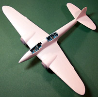
Once the glue had cured fully the wings were a piece of cake to clean up. Even the little dogleg joint at the engine nacelles that are such a pain on Revell and Monogram kits went together well and needed only a slight trim with the razor knife. The butt end of the wing joint is a stepped joint to create the proper dihedral and this works very well. The wing mated up to the fuselage quite well. The top panel fit to the fuselage was exceptional and will need no fill, the bottom panel while not quite as good a fit was better than I have seen on many current mainstream kits and will need very little fill to clean up. Once the wings were in place a quick check of the dihedral showed everything had lined up perfectly. The elevators were assembled next and glued in place – they required a little tweaking to hold a ninety-degree angle to the fin but were no more trouble than on any other kit.
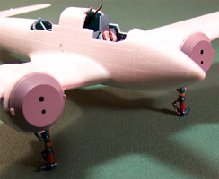
I forgot to mention that while I was working on the landing gear I added some brake lines. These were made from fine fuse wire and held in place with straps made from thin strips of masking tape. The pictures to the right and the left are linked pictures so you can click on them for larger images if you like.
I dipped all my clear parts in Future floor polish and set them aside to cure under overturned cups to prevent dust from adhering to them. While these parts cured I moved on to the engines. The detail level on the engines is very good but little if any of it will be visible once completed. The kit provides a really nice looking two piece exhaust collective and great cylinder head detailing on both the front and the back of the heads. The cowling is a three-piece assembly; two sidepieces and a front ring.
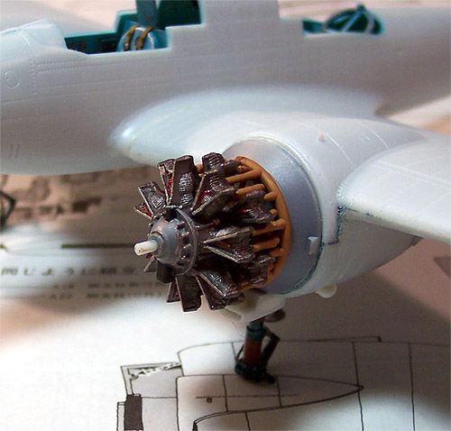
The alignment pins on the sidewalls interferes slightly with the engine when sliding this over the assembly. I had to take my Dremel with a sanding drum, reach inside and carefully remove the alignment pin from the top and the bottom of the cowling. Once that was done the engine fit in place nicely. The engines were painted with Gunze-Sangyo Burnt Iron, dry brushed with Steel and washed with my sludge wash. The wiring harness was done with Testors Flat Red and the exhaust collectives were done with Polly Scale Rust.
The insides of the cowlings were done with Testors Flat Aluminum. There are several small pieces to place around the lower engine cowl and you can just see one of these in the picture to the right. Also note the oil cooler intake mounted below the engine. This is one of the pieces that experienced sinkholes and had to be repaired with Squadron White Putty on three sides. This defect was evident on both intakes. The pilot has such a large hole in his chest that he will only be good as a dead body in a diorama. Fortunately these are the only pieces with this problem. Another item of interest in this picture is that little dogleg seam between the top and bottom panels right at the engine nacelle. This is the one I mentioned earlier in comparison to the Revell-Monogram kits. See how nicely it fits together?
I installed the engine cowlings which pretty much cover up these nice looking engines and moved on to the wheels. These were painted tire black with the inner hubs done in gloss black then attached to the model. I wrapped tissue paper around the main gears and packed more tissue into the gear bays for painting. The canopy sections were masked with strips of masking tape and glued in place with Testors Clear Parts cement. The rear gunner’s position was stuffed with more tissue paper and so were the engine bays. I cut out the wing leading edge landing light with a razor saw and filled the interior with Squadron White putty. Once it had set I sanded it square with a diamond needle file. The antenna mast and Pitot tube were installed last to reduce the chances of getting snapped off during construction.
That last paragraph covered about five evenings of modeling work. The model was then wiped down with a Micro Sheen Cloth to remove and fingerprints and to pull debris out of all of those little rivet holes. A quick blow down with compressed air and she was ready for the first coat of primer. I used Model Master Primer Gray cut 50 percent with lacquer thinner to prime her with then applied some Gunze-Sangyo RLM 65 light blue. Yeah, I know this is not accurate but I have no color charts to work off of for this aircraft, just the box art and a single color picture of the actual aircraft I found on the net so colors are matched as close as possible. The RLM 65 just looked very close so that is what I used. So here she is with that first coat of color ….
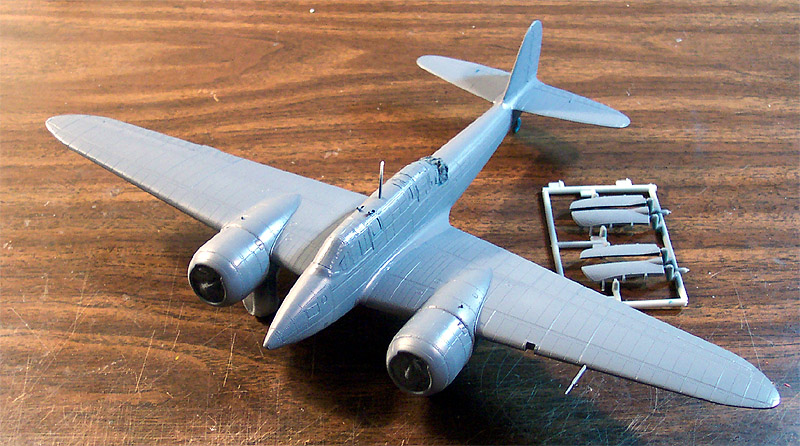
It was at this point that I decided I did not want to use the kit leading edge decals but would rather paint them so back to the paint room and on goes some Testors Flat Yellow. This area was then masked and more RLM 65 went on. While all this was going on I put a lot of thought into how to deal with the white wing and fuselage bands in relation to the blotch camouflage pattern. I felt that if I painted the pattern then applied the decals the underlying pattern would show through so maybe I should pre-paint those areas. Also, how was I going to make this pattern? Should I cut masks or try it free hand? All reference material I found showed the pattern having a very well defined edge so airbrushing without a mask was not going to work. Then the thought occurred to me that if I should stop right where I was, Future the RLM blue and apply the decals then I could brush paint the pattern and dispense with masks and pre-painting the wing band areas. I decided to gamble and take this approach. This next shot is after the wing band masks have been removed and the propellers have been installed. The tissue packing for the engines and landing gear have been removed and the tail wheel and gear have been painted.
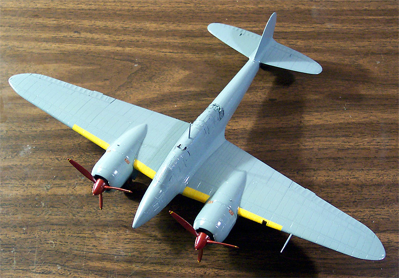
The decals had looked very delicate on the paper but once I started working with them I found them to be some pretty tough mothers. They reminded me very much of the old Tamiya decals and I had to apply several treatments of Gunze-Sangyo Mr. Marker Soft to get them to lay down and even then I was not totally happy. I placed the wing bands; fuselage band and large tail-fin markings then applied the camouflage pattern by brush using Gunze-Sangyo INJ Green. It went very well and I was quite satisfied with the final result. Once it had dried I added the remaining decals and recoated the model with Future floor polish. I also added the rudder hinge mechanisms at the tail and installed the landing gear doors. She is almost done now, just some exterior wash and a few final details to go, here she is so far …
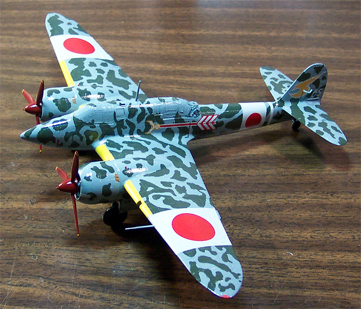
Antenna wire is made from invisible thread drawn across a black permanent marker and affixed with super glue. A basic sludge wash was used to weather the aircraft and highlight the panel lines and rivets. A little bit of silver paint chipping was done around the engine cowlings and at the crew access walk areas. Polly Scale Clear Flat was used as the dull coat and some ground gray and brown pastel chalks were rubbed into the wings for exhaust staining. The exhaust staining was carried on to the lower side of the elevators. Some Tamiya X-19 smoke was used around the 37mm cannon followed up with a little ground pastel chalk. The landing light bay was painted with the cockpit blue color and the light was created with drops of black and silver paint. I heated a piece of clear plastic card from a pack of AA batteries over a candle flame then held it across the leading edge of the wing to make a lens for the light. This was trimmed to fit and glued in place with some Testors Clear Parts Cement.
The only things about this model that I did not like were some ambiguous construction series on the engine banks (built my first one backwards and had to take it apart and rebuild – that was fun) and the heavy decals. If I were to do another one of these I would paint the white wing and fuselage bands and use hinomarus from the spare decal box there. The figures used in the final photo shoot come from a variety of places, two are from a set of Hasegawa figures, one is from a Hasegawa J7W1 and another comes from a Tamiya Zero kit. The fuel recovery cart is a Verlinden piece. The fuel drums are from a Pro-Modeler set and the toolbox and gas can are more Verlinden pieces. The planks are scratch built from Evergreen strip styrene.
Here are the finished photos.
Each picture links to a larger photo so you can click on them to view an enlarged shot, enjoy.
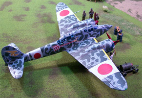
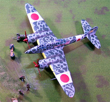
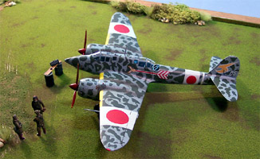
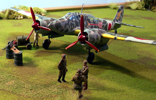
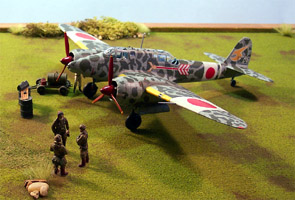
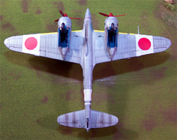